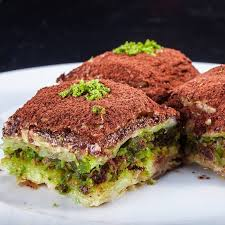

TATLILAR
BAKLAVANIN TARİHİ:
 Fatih Sultan Mehmet dönemine ait mutfak defterlerinde kayıtlı olan bir bilgiye göre baklava ilk kez 1473
yılının Şaban ayında Topkapı Sarayı’nda pişirilmiştir. Baklavanın tarihine ait bir başka kayıt ise 17.
yüzyılın ortalarında Evliya Çelebi tarafından kaleme alınmıştır. Evliya Çelebi Seyahatnamesi’nde Bitlis
Beylerinden birinin konağında hazırlanan baklavadan tattığını yazmıştır.
Bununla birlikte III. Ahmed döneminin şair ve yazarlarından biri olan Seyyid Vehbi tarafından hazırlanan
Surname’de, padişahın dört şehzadesine yapılan sünnet töreninde tüm konuklara baklava ikram edildiği kayda
geçirilmiştir.
Bunlar ve buna benzer daha başka kayıtlardan, Osmanlı’da hemen herkes tarafından bilinen bir lezzet olsa da
baklavanın daha çok saray ve konaklarda yaşayan yüksek sınıf tarafından tüketilen bir tatlı çeşidi olduğunu
görmek mümkün.
Öyle ki baklava pişirilen mutfaklarda ustalar tecrübeli kişiler arasından seçilmiş, baklavanın incelikle
hazırlanması; pişirilmesi ve sofralara sunulması sağlanmıştır. Örnek verecek olursak bir aşçı; saray ya da
konak mutfağına alınmadan önce kendisine pilav ve baklava yaptırılmakta, yufka hamurunu ne kadar ince açtığı
ise işe alınıp alınmamasında önemli bir kriter olmuştur.
Osmanlı mutfağında baklavanın bu kadar özel ve önemli bir yere sahip olması, baklavacılığın gelişim
göstermesine ve aşçılıktan ayrı bir meslek dalı olarak kabul edilmesine ön ayak olmuştur.
Osmanlı’da baklava tarihine dair bilinmesi gereken bir diğer ayrıntı da hazırlanan pek çok farklı baklava
çeşidi olduğudur. Osmanlı tarihinde basılı ilk yemek kitabı olarak bilinen Melceü’t-Tabbahi’de yazılı olan
kaymak baklavası, pirinç baklavası ve âdi baklava ise bunlardan bir kısmıdır.
Fatih Sultan Mehmet dönemine ait mutfak defterlerinde kayıtlı olan bir bilgiye göre baklava ilk kez 1473
yılının Şaban ayında Topkapı Sarayı’nda pişirilmiştir. Baklavanın tarihine ait bir başka kayıt ise 17.
yüzyılın ortalarında Evliya Çelebi tarafından kaleme alınmıştır. Evliya Çelebi Seyahatnamesi’nde Bitlis
Beylerinden birinin konağında hazırlanan baklavadan tattığını yazmıştır.
Bununla birlikte III. Ahmed döneminin şair ve yazarlarından biri olan Seyyid Vehbi tarafından hazırlanan
Surname’de, padişahın dört şehzadesine yapılan sünnet töreninde tüm konuklara baklava ikram edildiği kayda
geçirilmiştir.
Bunlar ve buna benzer daha başka kayıtlardan, Osmanlı’da hemen herkes tarafından bilinen bir lezzet olsa da
baklavanın daha çok saray ve konaklarda yaşayan yüksek sınıf tarafından tüketilen bir tatlı çeşidi olduğunu
görmek mümkün.
Öyle ki baklava pişirilen mutfaklarda ustalar tecrübeli kişiler arasından seçilmiş, baklavanın incelikle
hazırlanması; pişirilmesi ve sofralara sunulması sağlanmıştır. Örnek verecek olursak bir aşçı; saray ya da
konak mutfağına alınmadan önce kendisine pilav ve baklava yaptırılmakta, yufka hamurunu ne kadar ince açtığı
ise işe alınıp alınmamasında önemli bir kriter olmuştur.
Osmanlı mutfağında baklavanın bu kadar özel ve önemli bir yere sahip olması, baklavacılığın gelişim
göstermesine ve aşçılıktan ayrı bir meslek dalı olarak kabul edilmesine ön ayak olmuştur.
Osmanlı’da baklava tarihine dair bilinmesi gereken bir diğer ayrıntı da hazırlanan pek çok farklı baklava
çeşidi olduğudur. Osmanlı tarihinde basılı ilk yemek kitabı olarak bilinen Melceü’t-Tabbahi’de yazılı olan
kaymak baklavası, pirinç baklavası ve âdi baklava ise bunlardan bir kısmıdır.

Soğuk baklavanın tarihi Osmanlı İmparatorluğu'na kadar dayanır. Bu tatlı Türk
mutfağındaki en popüler tatlılardan biridir ve Balkanlar, Ortadoğu ve Kuzey Afrika'da da yaygın olarak
tüketilir. Baklava farklı birçok kültürde var olan bir tatlıdır. Yunanistan'da "baklava" olarak bilinen
tatlı, Osmanlı İmparatorluğu'nun fethinden sonra Türk mutfağına girmiştir. Osmanlı saray mutfağında baklava
farklı malzemelerle hazırlanırken, günümüzdeki soğuk baklava tarifi de Osmanlı İmparatorluğu'nun son
dönemlerinde ortaya çıkmıştır.